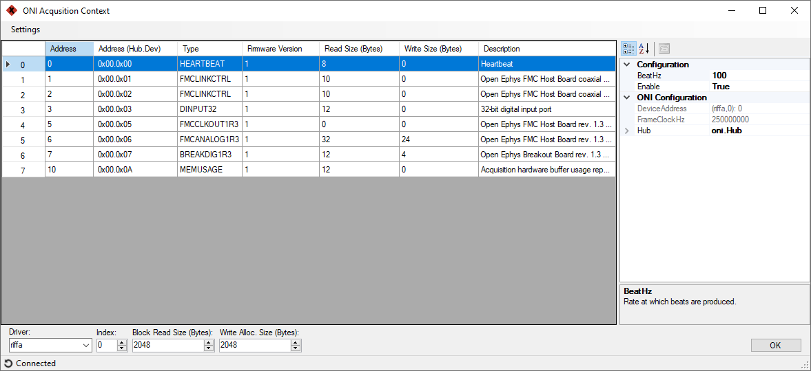
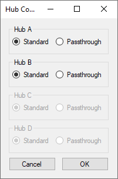
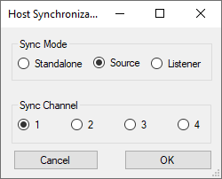

ONIContext#
A Bonsai source that manages a Acquisition Context and allows basic acquisition parameterization. There must be at least one of these in every workflow that uses ONIX hardware.
- Inputs:
None
- Outputs:
A single
ONIContextTaskfollowed by Never.


Purpose#
Bonsai.ONIX’s design mirrors the that of the Open Neuro Interface
specification. Control of and
acquisition from ONIX hardware is handled by a combination of two or more
nodes: an ONIContext and potentially many Device nodes which
it manages (e.g. HeartbeatDevice, AnalogIODevice, etc.). Some
facts about the ONIContext node are useful for understanding how
to use it.
{kind=link}
ONIContext is responsible for communicating with hardware and the informing devices, identified using their DeviceAddress, that they have new data.#
An ONIContext manages a global Device Table. When it is placed in a workflow, all device nodes will automatically have access to to this table without requiring an explicit connection in the workflow.
When acquisition is started, the ONIContext node will produce a single
ONIContextTaskand then nothing. This “task” runs in the background until the workflow is stopped.When the workflow is running, the
ONIContextTaskuses a dedicated thread to read from the host hardware. It then passes data into a blocking queue which is read by a second thread that is responsible for informing individual device nodes that they have new samples.Device nodes are essentially filters for the data stream produced by ONIContext. Device nodes will accept samples that match their DeviceAddress. This is why each Device node has an DeviceAddress parameter that unambiguously identifies them them in a Device Table.
Important
Every Bonsai workflow must include at least a single ONIContext which manages a single device table. If multiple pieces of host acquisition hardware (e.g. multiple PCIe Host) are present in a single computer, then each will need its own ONIContext to manage it.
Configuration GUI#
ONIContext configuration is performed using a GUI provided in the Bonsai.ONIX.Design library. It can be opened by double clicking on the ONIContext node if Bonsai.ONIX.Design has been installed.
This GUI gives access to ONI Context configuration such as as well as the complete Device Table. Devices within the table are available for configuration using the Properties Pane on the right side of the form.
Settings: Drop down menu that provides several hardware configuration options
Driver: The device driver used to control the host hardware.
Slot: The physical slot of the Host hardware in the computer.
Read Block Size: The number of bytes read per call to the kernel driver. Larger numbers will generally increase overall bandwidth and decrease response latency.
Write Block Size: The number of bytes pre-allocated to make output for output data frames. Larger numbers may increase overall bandwidth and decrease response latency.
<status>: Shows the current host hardware connection status. Clicking will attempt to reconnect to the host hardware.
{kind=link}
Tip
Optimal values of Read Block Size and Write Block Size depend heavily on the computer being used and the devices being acquired from: e.g. how many devices, at what sample rate, at what frame size, etc. Experimentation will be required to get the lowest response latency. The Latency Test Workflow workflow provides a way for users to do this quickly for their hardware setup.
Warning
Changes to device registers using the ONIContext GUI will not be saved in the workflow file. To save device register values to file, device configuration must be performed using dedicated device nodes.
Settings ➞ Hubs…#
ONIX-specific hub options such as access to raw deserializer data streams:
- Standard:
The hub port is configured to work with official ONIX headstages.
- Passthrough:
The hub port is configured to work with compatible 3rd-party devices, such as UCLA Miniscopes.
Settings ➞ Host Sync…#
Hardware synchronization configuration for two or more hosts that are connected with a synchronization cable.
- Standalone:
Acquisition for this host is independent from others host hardware. It will run on its own clock and start using an internal trigger.
- Source:
The host runs in Standalone mode and shares its acquisition start trigger to the selected Sync Channel. There is only one Source allowed per synchronization channel.
- Listener:
The host is synchronized to the Source hardware on the selected Sync Channel. Any number of listeners can be assigned to a single Sync Channel.
Important
Only the aquisition start trigger is shared from Sources to Listeners. The acquisition clock may or may not be shared depending on the type of host hardware being used. For example, if all hardware consists of PCIe Hosts on the same motherboard, then both start trigger and acquisition clocks will be shared and synchronization ed. Multiple USB hosts will only share a start trigger and the acquisition clocks will drift over time.